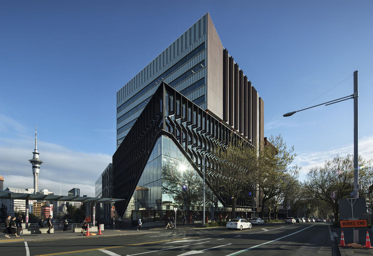

Local information
Venue
The conference will be hosted by the Department of Statistics | Te Kura Tatauranga at the University of Auckland | Waipapa Taumata Rau within the Science Centre, Building 303 (38 Princes St, Auckland CBD).

Visas
To find out if you need a visa to enter New Zealand and for information on the visa application process, please consult the New Zealand government website. Most people visiting NZ must pay the NZD$35 International Visitor Levy. If you require a Visa, you can request an invitation letter for your Visa application by emailing iase2024.roundtable@gmail.com after registering for the conference. Note that organisers cannot influence or accept responsibility for the processing of Visa applications. Delegates are advised to apply for visas well in advance of the conference, and before booking non-refundable flight tickets and accommodation.
Travel
Auckland International Airport is the main hub for travel in New Zealand, for both international and domestic flights. Unfortunately, there are currently no public transport options for getting from the airport to the conference venue or the Auckland CBD. Depending on your time of arrival, there should be plenty of taxis available. You can also book Super Shuttle for a direct ride from the airport to your accommodation, or use various rideshare options such as Uber.
Accommodation
There are a number of options for accommodation close to the University of Auckland Science Centre, which is located within the Auckland CBD. Some recommendations are below:
Copthorne Hotel Auckland City
The Copthorne Hotel is 10 minute walk from the conference venue, and currently has rooms available from NZD$105 per night.
Contact details: 150 Anzac Avenue, P.O. Box 3272, Auckland CBD, New Zealand 1010 | +64 9 379 8509 | copthorne.aucklandcity@millenniumhotels.co.nz
Quadrant Hotel & Suites
The Quadrant Hotel & Suites is 10 minute walk from the conference venue, and currently has rooms available from NZD$165 per night (prepaid/VR member).
Contact details: 10 Waterloo Quadrant, Auckland CBD, New Zealand 1010 | +64 9 984 6000 | quad.reservations@vrhotels.co.nz
Meals
Lunch and refreshments will be provided to attendees on all four days of the conference (2-5 July) at the conference venue (included in registration fees).
For other meals, there are diverse options available in the many restaurants located within the Auckland CBD and down at the waterfront. The inner city suburbs of Newmarket, Parnell, Mt Eden, and Ponsonby are also well known for their cuisine.